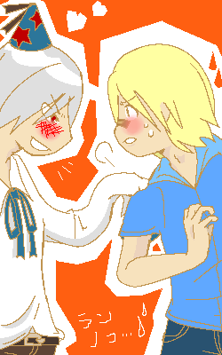
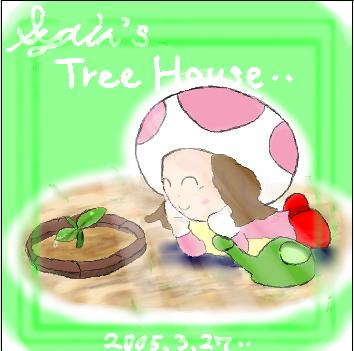
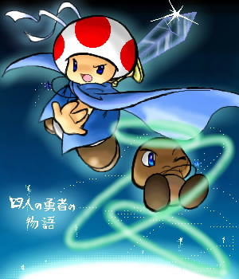

ＴＯＰ絵館
ここには、歴代のＴＯＰ絵たちが飾られてゆきます。
|  | 第三代ＴＯＰ絵 お絵かきスケッチブックにて募集した ＴＯＰ絵の中から、 ケムリ様のイラストを選ばせていただきました。 しゅ、主線がきれいすぎます・・！！ アニメ塗りもまた、すごいです！ |
|  | 第二代TOP絵 TOPに管理人自体の絵がないってのもどうよ、と、 時雨さんの絵の斜め下に展示した、 マリオストーリーのリップ。春をイメージ（これでも 光を描かなければ良かったと後悔したのは、また別の話です（笑 ものすごい劣化ですが、お気になさらず； もう少しキレイに保存できないものか・・； |
|  | 第一代ＴＯＰ絵 透水時雨様からいただいた、 クリスケとカーレッジです。 め、めちゃくちゃかっこいいです・・ｖ 私、初めてこの絵を見たとき、 心臓止まるかと思いましたね（笑 私の、大切な宝物の絵の一つです。 |